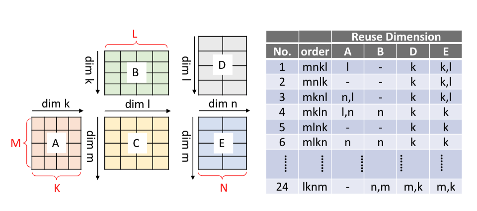

Chimera: An Analytical Optimizing Framework for Effective Compute-intensive Operators Fusion
这是zheng size的一篇分析建模的文章，思路和Model Driven Optimization类似，但是细节上有一些差异，简单总结一下。
Block Decomposition
首先给定一个两个矩阵乘的例子, 下图中隐含了他的reuse dim的计算方式：

# 当前所有循环中最后参与访问的循环内部的循环即为reuse dims
reuse_dims = perms[last_access_dim(buffer, perms) + 1:]比如上图中mnkl的顺序，其中m,k参与访问A， 因此只有l是reuse dim.
分层是为了单独求解当前层的循环顺序，因为在Model Driven Optimization中说了，如果两个层级，那么他们的循环并不是全部组合，而是分层组合。
然后每个层在给定的loop order中计算DV，MU，这里的Decomposition parameters S就是tile var。计算DM的逻辑比Model Driven Optimization进行了一些简化，如果是reuse dim就跳过，否则就乘上。 我理解他是认为他后面已经限制了sum(MU) < capacity，所以不存在超过cachesize的问题了。
input : Operator chain Ops
input : Permutation Perm = (lp1, lp2, ..., lpI )
input : Decomposition parameters S = (s1, s2, ..., sI)
output : data movement volume DV
output : memory usage MU
DV = 0, MU = 0
for op in Ops:
total_DF = 0
for tensor T in op.allTensors():
DF = getFootprint(T, S)
total_DF += DF
if T in Ops.IOTensors():
DM = DF
keep_reuse = true
for loop lpi in reversed(Perm):
if lpi in op.allLoops():
if lpi accesses tensor T:
keep_reuse = false
if not keep_reuse:
DM *= ceil(Lpi / spi)
DV += DM
for loop lpi in Perm:
if lpi is private to op:
Perm.erase(lpi)
MU = max(MU, total_DF)
return DV, MU通过这个算法计算之后，在mlkn的顺序下得到：
| A | B | C | D | E | |
|---|---|---|---|---|---|
| DM | \(MK \frac{L}{T_L}\) | \(KL \frac{M}{T_M}\) | 0 | $ NL $ | MN \(\frac{L}{T_L}\) |
| DF | \(T_MT_K\) | \(T_KT_L\) | \(T_MT_L\) | \(T_LT_N\) | \(T_M T_N\) |
所有访问到的数据都存在cache中，所以DF是通过access dim的tile来计算，DM这里是全部的access dim乘非reuse的次数。但是我还是有点疑惑，如果数据都在cache中，以MLK的顺序访问A真的会有重复load吗。
然后在约束MU的情况下最小化DV， \[ \begin{aligned} DV_{GEMM\ Chain} &=D M_{A}+D M_{B}+D M_{C}+D M_{D}+D M_{E} \\ & = M K\left\lceil\frac{L}{T_{L}}\right\rceil+K L\left\lceil\frac{M}{T_{M}}\right\rceil+N L\left\lceil\frac{M}{T_{M}}\right\rceil+M N\left\lceil\frac{L}{T_{L}}\right\rceil \\ MU &=max \left\{GEMM 1_{M U}, GEMM 2_{M U}\right\} \\ GEMM1_{M U} &=D F_{A}+D F_{B}+D F_{C}=T_{M} T_{K}+T_{K} T_{L}+T_{M} T_{L} \\ GEMM 2_{M U} &=D F_{C}+D F_{D}+D F_{E}=T_{M} T_{L}+T_{L} T_{N}+T_{M} T_{N} \\ min_{\vec{S}}\ DV_{GEMM\ Chain},\ &s.t. MU \leq MemoryCapacity (1) \end{aligned} \]
Optimization for Multi-level Memory Hierarchy
对于多内存层级，他的思路与Model Driven Optimization一致，也是假设数据移动可以并行，最小化最大的数据移动cost。
\[ \begin{gathered} min _{\vec{S_{1}}, \vec{S_{2}}, ..., \vec{S_{D}}}\left\{max \left\{Cost_{1}\left(\vec{S_{1}}\right), ..., Cost_{D}\left(\vec{S_{D}}\right)\right\}\right\}, \\ s.t. MU_{1} \leq M C_{1}, ..., MU_{D} \leq M C_{D} \end{gathered} \]
Implementation
我尝试对这篇论文做了一下复现, 最后的结果如下, 但感觉搜索到的k还是比较小，循环顺序还是比较合理的，倾向于把k移动到最内层:
best perm: ('m', 'n', 'k'), ('m', 'n', 'k')
best tile: ( 1 , 1, 512), ( 4, 4, 1), (m:64, k:4, n:16), 180866import itertools
from amplpy import AMPL
def solve_with_perms(all_perms: list[list[str]]):
ap = AMPL()
ap.eval('reset;')
ap.eval("""
var L2_m integer;
var L2_k integer;
var L2_n integer;
var L1_m integer;
var L1_k integer;
var L1_n integer;
var L0_m integer;
var L0_k integer;
var L0_n integer;
var L2_A_DF = (L1_m * L0_m) * (L1_k * L0_k) * 4;
var L2_B_DF = (L1_n * L0_n) * (L1_k * L0_k) * 4 * 4 * 4;
var L2_C_DF = (L1_m * L0_m) * (L1_n * L0_n) * 4 * 4 * 4;
var L1_A_DF = (L0_m) * (L0_k) * 4;
var L1_B_DF = (L0_n) * (L0_k) * 4 * 4 * 4;
var L1_C_DF = (L0_m) * (L0_n) * 4 * 4 * 4;
""")
access = {
'A': ['m', 'k'],
'B': ['n', 'k'],
'C': ['m', 'n']
}
for level in [2, 1]:
for bf in ['A', 'B', 'C']:
level_perms = all_perms[len(all_perms) - level]
params = [f'L{level}_{bf}_DF']
axis = len(level_perms) - 1
while axis >= 0 and level_perms[axis] not in access[bf]:
axis -= 1
while axis >= 0:
params.append(f'L{level}_{level_perms[axis]}')
axis -= 1
dm = f'var L{level}_{bf}_DM = {" * ".join(params)};'
ap.eval(dm)
ap.eval("""
subject to L2_m_c: L2_m >= 1;
subject to L2_k_c: L2_k >= 1;
subject to L2_n_c: L2_n >= 1;
subject to L1_m_c: L1_m >= 1;
subject to L1_k_c: L1_k >= 1;
subject to L1_n_c: L1_n >= 1;
subject to L0_m_c: L0_m >= 1;
subject to L0_k_c: L0_k >= 1;
subject to L0_n_c: L0_n >= 1;
subject to M_c: (L0_m*L1_m*L2_m) = 256;
subject to K_c: (L0_k*L1_k*L2_k) = 2048;
subject to N_c: (L0_n*L1_n*L2_n) = 64;
var l1_DF = (L1_A_DF + L1_B_DF + L1_C_DF);
var l2_DF = (L2_A_DF + L2_B_DF + L2_C_DF);
subject to l1_capacity_c: l1_DF <= (512 * 1024);
subject to l2_capacity_c: l2_DF <= (1024 * 1024);
""")
ap.eval("""
var mem_cost integer;
subject to max_c2: ((L2_A_DM + L2_B_DM + L2_C_DM) / 64) <= mem_cost;
subject to max_c1: ((L1_A_DM + L1_B_DM + L1_C_DM) / 16) <= mem_cost;
minimize total_cost: mem_cost;
""")
ap.solve(solver='couenne')
L2_m = ap.get_value('L2_m')
L2_k = ap.get_value('L2_k')
L2_n = ap.get_value('L2_n')
L1_m = ap.get_value('L1_m')
L1_k = ap.get_value('L1_k')
L1_n = ap.get_value('L1_n')
L0_m = ap.get_value('L0_m')
L0_k = ap.get_value('L0_k')
L0_n = ap.get_value('L0_n')
total_cost = ap.get_value('total_cost')
l1_DF = ap.get_value('l1_DF')
l2_DF = ap.get_value('l2_DF')
print("all_perms:", all_perms, 'L2_m', L2_m, 'L2_k', L2_k, 'L2_n', L2_n, 'L1_m', L1_m, 'L1_k',
L1_k, 'L1_n', L1_n, 'L0_m', L0_m, 'L0_k', L0_k, 'L0_n', L0_n, 'total_cost', total_cost,
'l1_DF', l1_DF,
'l2_DF', l2_DF)
return (L2_m, L2_k, L2_n, L1_m, L1_k, L1_n, L0_m, L0_k, L0_n, total_cost)
if __name__ == "__main__":
max_cost = 9999999
best_res = None
best_perm = None
for l2 in itertools.permutations(['m', 'k', 'n'], 3):
for l1 in itertools.permutations(['m', 'k', 'n'], 3):
res = solve_with_perms([l2, l1])
if res[-1] < max_cost:
max_cost = res[-1]
best_res = res
best_perm = (l2, l1)
print("best perm: ", best_perm, "best tile: ", best_res)